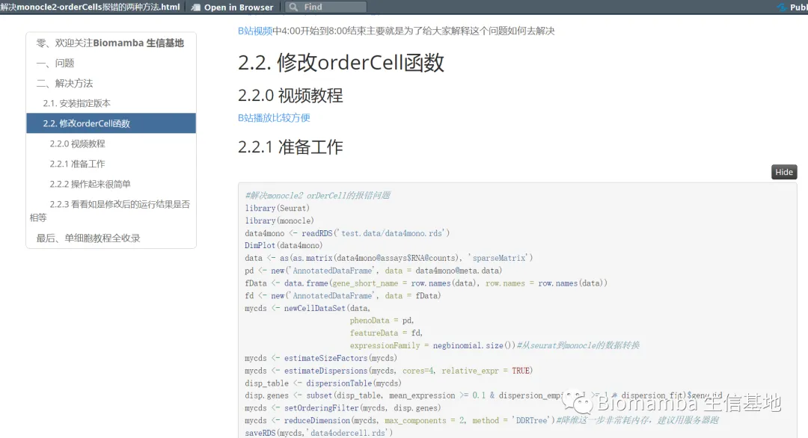
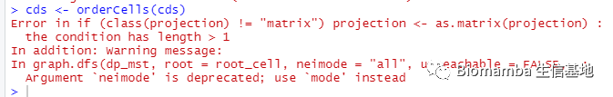
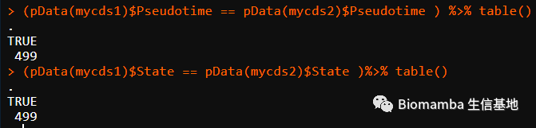

解决monocle2的orderCells报错的两种方法
原文：https://mp.weixin.qq.com/s?__biz=MzAwMzIzOTk5OQ==&mid=2247491083&idx=1&sn=c5697ab024193cb6595d27e4f4d3bfaf&chksm=9b3f675bac48ee4d7244d9819e14fe210f7e42e40fc7a6a8df7b95bfd92f06334d60d226cb93#rd 合集：单细胞教程全收录
 此前我们给大家做了一系列monocle的教程用于帮助大家完成拟时序分析 ，虽然是边做边骂 monocle语法差、bug多、版本不兼容，但是monocle从计算效率和效果 上来看仍然是市面上最优秀的拟时序分析软件之一。
目前从大家的反馈上来看，orderCells这个函数由于版本问题出现bug的频率最多，此前我们已经给大家出了一个推送解决版本问题(答读者问（十八）、一个我至少被问过30遍的monocle报错)，但是仍有同学不会安装相应的版本，这里我们也提供一种更简单的修改源码 方法，并且经验证后确定有效。
此前我们给大家做了一系列monocle的教程用于帮助大家完成拟时序分析 ，虽然是边做边骂 monocle语法差、bug多、版本不兼容，但是monocle从计算效率和效果 上来看仍然是市面上最优秀的拟时序分析软件之一。
目前从大家的反馈上来看，orderCells这个函数由于版本问题出现bug的频率最多，此前我们已经给大家出了一个推送解决版本问题(答读者问（十八）、一个我至少被问过30遍的monocle报错)，但是仍有同学不会安装相应的版本，这里我们也提供一种更简单的修改源码 方法，并且经验证后确定有效。
视频教程 : B站连播更方便：https://www.bilibili.com/video/BV1br4y1x7Hf?p=11代码与测试文件下载链接：
https://pan.baidu.com/s/1XRkUW7s2nQxE6HuLjY-VGw?pwd=5652
不要问为什么文件里没有代码啦，已经用Rmarkdown编译成html存在上面的链接里了。用浏览器打开即可，有代码、有结果，大家使用起来更方便不是嘛~

图文教程：
一、问题
如果你的monocle版本不是2.18.0~2.21.1，你可以能会遇到以下问题

二、解决方法
2.1. 安装指定版本
这个我们在做视频时已经讲解过了，代码可以直接看推送: 答读者问（十八）、一个我至少被问过30遍的monocle报错
B站视频中4:00开始到8:00结束主要就是为了给大家解释这个问题如何去解决
2.2. 修改orderCell函数
2.2.0 视频教程
B站播放比较方便:
https://www.bilibili.com/video/BV1br4y1x7Hf?p=11
2.2.1 准备工作
#解决monocle2 orDerCell的报错问题library(Seurat)library(monocle)data4mono <- readRDS('test.data/data4mono.rds')DimPlot(data4mono)data <- as(as.matrix(data4mono@assays$RNA@counts), 'sparseMatrix')pd <- new('AnnotatedDataFrame', data = data4mono@meta.data)fData <- data.frame(gene_short_name = row.names(data), row.names = row.names(data))fd <- new('AnnotatedDataFrame', data = fData)mycds <- newCellDataSet(data, phenoData = pd, featureData = fd, expressionFamily = negbinomial.size())#从seurat到monocle的数据转换mycds <- estimateSizeFactors(mycds)mycds <- estimateDispersions(mycds, cores=4, relative_expr = TRUE)disp_table <- dispersionTable(mycds)disp.genes <- subset(disp_table, mean_expression >= 0.1 & dispersion_empirical >= 1 * dispersion_fit)$gene_idmycds <- setOrderingFilter(mycds, disp.genes)mycds <- reduceDimension(mycds, max_components = 2, method = 'DDRTree')#降维这一步非常耗内存，建议用服务器跑saveRDS(mycds,'data4odercell.rds')
2.2.2 操作起来很简单
mycds1 <- orderCells(mycds)#这里先按修改前的运行(我这个版本本就可以正常运行)#修改orderCellstrace('project2MST', edit = T, where = asNamespace("monocle"))mycds2 <- orderCells(mycds)#用修改后的orderCells排序
2.2.3 看看如是修改后的运行结果是否相等
#我们来看一下这两次运行的结果是否相等#显然两个cds格式的文件不能简单通过==来判断，try(mycds1 == mycds2)#我们来看一下orderCells的源码orderCells#最后返回的数据应该存放在pData(cds)$Pseudotime，pData(cds)$State library(dplyr)(pData(mycds1)$Pseudotime == pData(mycds2)$Pseudotime ) %>% table()(pData(mycds1)$State == pData(mycds2)$State )%>% table()#没问题，一模一样

往期回顾：
单细胞数据分析系列教程：
B站视频，先看一遍视频再去看推送操作，建议至少看三遍：https://www.bilibili.com/video/BV1S44y1b76Z/ 单细胞测序基础数据分析保姆级教程，代码部分整理在往期推送之中：手把手教你做单细胞测序数据分析（一）——绪论 手把手教你做单细胞测序数据分析（二）——各类输入文件读取 手把手教你做单细胞测序数据分析（三）——单样本分析 手把手教你做单细胞测序数据分析（四）——多样本整合手把手教你做单细胞测序数据分析（五）——细胞类型注释 手把手教你做单细胞测序数据分析（六）——组间差异分析及可视化手把手教你做单细胞测序数据分析（七）——基因集富集分析
上游fastq文件处理： 单细胞分析的最上游——处理Fastq文件：cellranger 单细胞分析的最上游——处理Fastq文件：dropseqRunner有奖提问,这个smart-Seq2数据实战的比对率为何如此低？
细胞通讯B站连续播放起来比较方便： https://www.bilibili.com/video/BV1Ab4y1W7qx?p=1往期推送 单细胞测序数据进阶分析—《细胞通讯》1.概论 单细胞测序数据进阶分析—《细胞通讯》2.1CellChat基础分析教程 单细胞测序数据进阶分析—《细胞通讯》2.2CellChat多组别分析 给你们申请到了免费的128GB云服务器 拟时序分析B站连续播放起来比较方便： https://www.bilibili.com/video/BV1br4y1x7Hf?p=1往期推送 单细胞测序数据进阶分析—《拟时序分析》1.概论 单细胞测序数据进阶分析—《拟时序分析》2.monocle概论单细胞测序数据进阶分析—《拟时序分析》3.monocle2实操：完整版 单细胞测序数据进阶分析—《拟时序分析》4.初识monocle3 单细胞测序数据进阶分析—《拟时序分析》5.monocle3的降维、分群、聚类单细胞测序数据进阶分析—《拟时序分析》6.monocle3的拟时序分析
其他单细胞相关技术贴也在这里：细胞的数量由誰决定？单细胞中应该如何做GSVA？答读者问（三）：单细胞测序前景答读者问（四）：如何分析细胞亚群答读者问（六）：Seurat中如何让细胞听你指挥答读者问（八）：为什么Read10X也会报错? 答读者问（十）整合后的表达矩阵，如何拆分出分组信息？ 答读者问（十一）如何一次性读取一个目录下的cellranger输出文件？ 给你安排一个懂生信的工具人（十）：不学编程 零代码完成单细胞测序数据分析：Loupe Browser 什么？不做单细胞也能分析细胞类群和免疫浸润？ 答读者问 （十三）查看Seurat对象时的ERROR：type='text' 各类单细胞对象（数据格式）转换大全（一）批量整理好GEO中下载的单细胞数据 答读者问 （十四）Seurat中分类变量处理技巧 答读者问 （十五）稀疏矩阵转matrix, as.matrix函数是下下策 答读者问 （十六）做单细胞测序到底需要多少内存答读者问 （十七）调用的线程越多就算的越快嘛? 答读者问（十八）、一个我至少被问过30遍的monocle报错 一文搞定单细胞基因集评分沉浸式统计细胞比例没有barcode文件的单细胞数据要怎么读取
单细胞文献阅读：Biomamba助推的第二篇文章!发表了！文献阅读（三）、单细胞测序解析糖尿病肾病中肾小球的动态变化 文献阅读（四）、单细胞测序技术解析健康人与T2D患者的胰岛差异文献阅读（六）、小鼠全肾单细胞测序开篇之作文献阅读（七）、一篇不花钱就能白嫖的文章文献阅读（八）、不会吧不会吧，Nature都能白嫖？文献阅读（十一）、高氧下小鼠肺发育损伤的ScRNA图谱文献阅读（十二）、IgAN & STRT-Seq 文献阅读（十三）、老树开新花——EGFR、肿瘤、免疫+scRNA-Seq 文献阅读（十五）、癌前基质细胞驱动BRCA1肿瘤发生文献阅读（十八）、紧跟生信"钱"沿,胰腺癌&免疫多模态图谱 文献阅读（十九）、原发头颈癌和肿瘤转移微生态 文献阅读（二十一）、肾脏疾病&代谢&核受体ESRRA文献阅读（二十二）、PD-1&急性髓细胞性白血病&T Cell
单细胞注释复写单细胞注释复写(一):Human Fetal Kidney
非技术帖：关于单细胞的事 谈谈后面的计划趁机预告一波有关提高"Biomamba 生信基地"运行效率事宜 生信分析为什么要使用服务器？

如何联系我们
 公众号后台中消息更新不及时，超过48h后便不允许回复读者消息，这里给大家留一下领取资料、咨询服务器的微信号 ，方便大家随时交流、提建议（由助理接待）。此外呼声一直很高的交流群也建好了，欢迎大家入群讨论：永久免费的千人生信、科研交流群
公众号后台中消息更新不及时，超过48h后便不允许回复读者消息，这里给大家留一下领取资料、咨询服务器的微信号 ，方便大家随时交流、提建议（由助理接待）。此外呼声一直很高的交流群也建好了，欢迎大家入群讨论：永久免费的千人生信、科研交流群
大家可以阅读完这几篇之后添加笑一笑也就算了如何搜索公众号过往发布内容